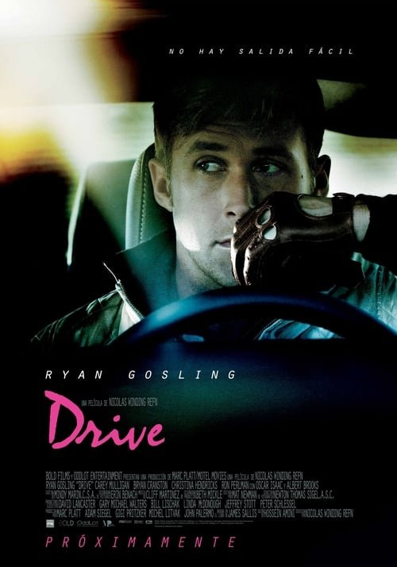

Drive (2011)
Sinopsis Rápida
De día, un mecánico silencioso y experto conductor de cine. De noche, un chofer para criminales. Un solo error puede costarle la vida, y la de aquellos que ama.
Sinopsis Detallada
Drive nos sumerge en el oscuro mundo de un misterioso conductor (Ryan Gosling), un hombre de pocas palabras y gran habilidad al volante que se gana la vida como doble de riesgo y chófer para la mafia. Su vida tranquila se ve interrumpida cuando conoce a Irene, la vecina de al lado, y se ve envuelto en una espiral de violencia y traición. La película es un festín visual con una banda sonora icónica que potencia la tensión y el estilo visual neo-noir. Un thriller implacable y elegante que te dejará sin aliento.
¿Por qué tenés que verla?
- Una experiencia cinematográfica visualmente impactante, con una atmósfera tensa y estilizada.
- La icónica banda sonora compuesta por Cliff Martinez realza la tensión y el estilo de la película.
- Drive se ha convertido en una película de culto, influyendo en el cine y la cultura popular por su estética y narrativa.
- La actuación contenida y poderosa de Ryan Gosling.
Idea Extra
Análisis de la estética visual de Drive: Influencias, simbolismo del color y la luz, y su impacto en la creación de atmósfera.